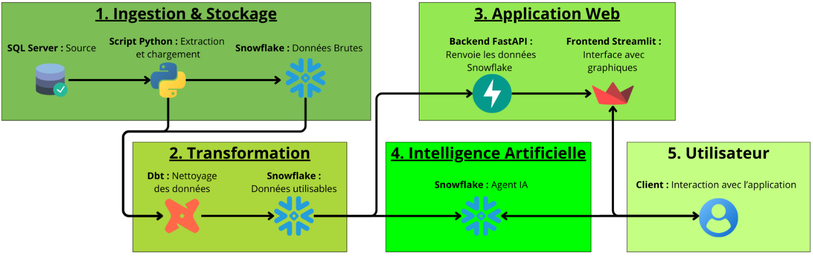
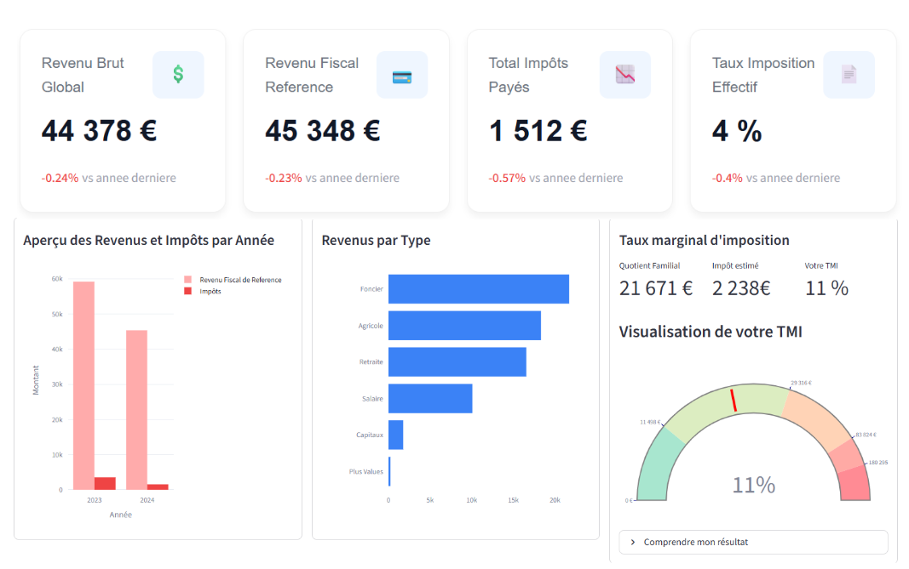

Contexte
Stage de 8 semaines au sein du pôle Agiris d'ISAGRI à Beauvais, éditeur de logiciels comptables pour experts-comptables. La mission : concevoir de zéro un système de données permettant d'analyser les revenus clients de leurs utilisateurs, en passant par toute la chaîne — extraction, transformation, stockage et visualisation.
Architecture — Pipeline de données
Mission A — Pipeline de données
Extraction des données depuis une base SQL Server on-premise via Python, puis chargement dans Snowflake organisé en trois couches selon la méthodologie medallion architecture :
- RAW — données brutes, copie fidèle du source sans transformation
- Staging — nettoyage, normalisation, gestion des types et des valeurs manquantes
- BD Analytique — tables agrégées et prêtes à la consommation par les dashboards
Mission B — Dashboard analytique (Streamlit)

Interface web interactive développée avec Streamlit, connectée directement à Snowflake. Le dashboard permet aux experts-comptables de visualiser l'évolution des revenus de leurs clients avec :
- Graphiques interactifs par période (mensuel, trimestriel, annuel)
- Filtres dynamiques par type de revenus et par client
- Regroupements et comparaisons entre dossiers
- Export des données filtrées
Mission C — IA conversationnelle (Cortex AI)

Intégration de Snowflake Cortex AI pour permettre d'interroger la base de données en langage naturel. L'utilisateur peut poser des questions comme "Quel est le client avec la plus forte croissance ce trimestre ?" et obtenir une réponse générée à partir des données réelles.
- Connexion du LLM directement aux tables Snowflake analytiques
- Interface de chat intégrée dans le dashboard Streamlit
- Requêtes SQL générées automatiquement depuis le langage naturel